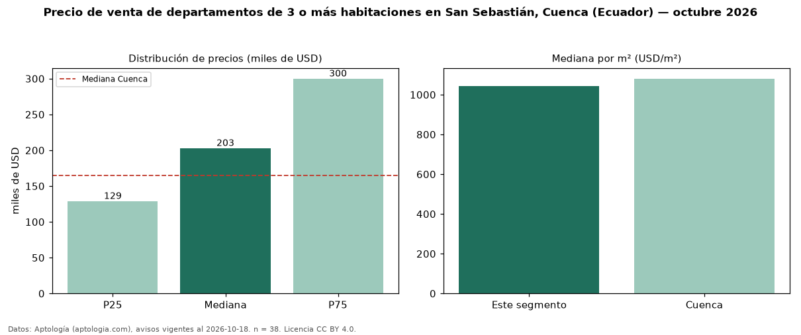

Precio de venta de departamentos de 3 o más habitaciones en San Sebastián, Cuenca (Ecuador) — octubre 2026
USD 203.000 es el precio mediano de departamentos de 3 o más habitaciones en venta en San Sebastián, Cuenca (Ecuador) (n = 38 avisos). Frente a la mediana de Cuenca para departamentos de 3 o más habitaciones (USD 165.000), queda 23 % por encima. Por metro cuadrado, la mediana es USD 1.042/m² (n = 37 avisos con área), 4 % por debajo de Cuenca (USD 1.081/m²). Son 62 % de los 61 avisos de departamentos en venta de la zona, cuya mediana general es USD 155.000 (+31 %). El área mediana anunciada es 180 m². La mitad central de los avisos va de USD 129.025 a USD 300.000 (razón 2,3), una dispersión alta. Datos: Aptología (aptologia.com), CC BY 4.0 — https://www.aptologia.com/ec/venta/cuenca/san-sebastian. Archivos: PDF, CSV con las cifras y gráfica PNG.

| Avisos únicos | 38 |
|---|---|
| Percentil 25 | COP 129.025 |
| Mediana | COP 203.000 |
| Percentil 75 | COP 300.000 |
| Mediana por m² | COP 1.042 |
Fuente: avisos vigentes de portales inmobiliarios recopilados por Aptología, deduplicados (mínimo 30 avisos únicos por celda). Precios pedidos, no cerrados. Fecha: 2026-10-18.